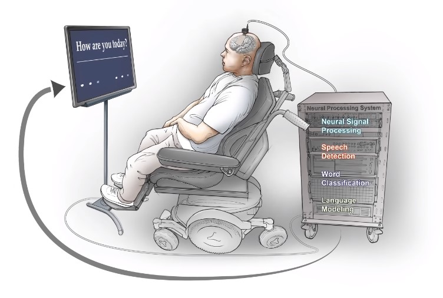

"Neuroprosthesis" enabled a man with paralysis to communicate in full sentences
TABLE OF CONTENTS
- Introduction
- How it works?
- Big questions about the future of this technology
- References
Introduction
In a promising breakthrough, neuroscientists at the University of California San Francisco (UCSF) published results from research that took more than a decade in the lab led by Dr Edward Chang (UCSF neurosurgeon) on developing a "neuroprosthesis" capable of enabling a man with severe paralysis to communicate in full sentences by only attempting to speak.
How it works?
The team how led the study consist of a postdoctroal engineer David A. Moses and two doctrol students Sean L. Metzger and Jessie R. Liu. They first surgically implanted a high-density electrode array over the part of the brain that controls the muscles of the vocal tract. Then they record signals from brain activity while the participant makes attempt to answer a question displayed in front of him. This collected brain data has been used to train an artificial neural networks (ANN) to perform word classification and then generate full sentences. One of the challanges the team encountered was the relative scarcityt of data collected as a member of the research team describe in responding to questions in reddit :
"To train artificial neural networks (ANNs) to recognize people in images, interpret sound waves into text, program autonomous vehicles, etc., researchers and engineers often have access to millions of training examples. When working with brain data, you often have many, many fewer examples. In our work, we had less than 10,000 total examples that we could use (each example is one attempt by the participant to produce one of the words) to train our ANN to perform word classification from neural activity".
What makes this research different from previous attempt in this field is the ability to generate full sentences with median 74% accuracy at 15 words per minute while other studies use a spelling-based approaches. The first participant in this study (chose to be referred to as BRAVO1) is a brainstem stroke survivor who lost the ability to speak naturally or move his hands to type 15 years ago instead he used to communicate with the help of an assistive technology controlled by his head movements now he is able to generate over 1000 sentences.
Big questions about the future of this technology
Most asked questions when a new study reveals informations about using data recorded from brain activity is "Will this technology be able to read minds?". In responding to this question the team of neuroscientists working in this project clarify that this "neuroprosthesis" will not be able to capture general thoughts instead it only translates signals of intentional attempts to speak as the electrode array was implanted over the speech motor cortex of the participant brain.
Another important question is "Will the data collected from one participant brain be useful to train a "general" artificial neural networks that can perform the task of word classification for any participant?". This concept is known in Machine Learning as "transfer learning", where the algorithm adapt to slightly different scenario and perform the requested task. Dr David Moses one of the team members said that "transfer learning" will be possible for some model parameters and not for other that require using data from individual participants and he clarified that in the future more clinical trial will be conducted with participants who are unable to speak in order to study these possibilities.
When we looking on the huge amount of words in the human language we immediately think will that be a problem for this technology?. The team working on developing this "neuroprosthesis" insisted that they are working on alterantive approaches to add more words to the device's vocabulary to cover the language used in daily life.
Dr Edward Chang and his team said that they are now working to add more words to the available vocabulary and to include more participants in the aim of helping "restore independence and the ability to speak to people who can't communicate using assistive methods".
References
Neuroprosthesis for Decoding Speech in a Paralyzed Person with Anarthria
“Neuroprosthesis” Restores Words to Man with Paralysis By Robin Marks
Q&A: Building a Speech Prosthetic for a Paralyzed Man by Arezu Sarvestani